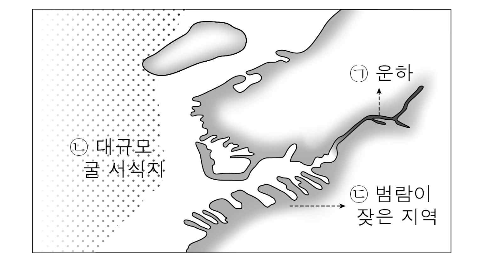

여러분, 지난 체험 학습 때 생태 공원의 교육관에서 함께 시청했던 다큐멘터리를 기억하시죠? 저는 그와 관련하여 생태 복원을 통해 환경 문제를 해결하는 방안을 소개하고자 합니다.
(화면을 가리키며) 이곳은 ○○ 나라의 항구 도시 □□입니다. 과거 이 지역은 수중 생물들이 방파제 역할을 했으나, 항구가 건설되면서 수중 생태계가 파괴되어 물이 범람하는 일이 잦아졌습니다. (화면을 가리키며) 여기는 운하인데요, 이 운하가 만들어져 물이 잘 순환되지 않아 오염되는 문제가 생겼습니다. 이러한 문제들의 해결을 위해 여러 방안이 강구되어 왔는데, 최근에 굴 구조체를 활용하는 프로젝트가 진행되고 있습니다. 지난 과학 시간에 굴이나 홍합이 자연의 방파제가 될 수 있고 물을 정화할 수 있다는 것을 함께 배웠는데, 기억하시죠? 대부분 기억하시는군요. 제가 소개하는 프로젝트는 우리가 알고 있는 이러한 굴의 능력을 활용한 것입니다. □□ 도시의 해안가에는 원래 굴이 많이 서식했지만, 항구와 운하를 만들면서 일부 지역을 제외하고는 거의 사라졌습니다. 이 프로젝트에서는 이렇게 사라진 굴의 서식지를 복원하여 도시 환경을 개선하는 것을 목표로 삼고 있습니다.
(화면을 가리키며) 여기가 굴 서식지를 대규모로 조성하고 있는 곳입니다. 이곳에 굴 서식지가 조성되면 물이 정화되고 암초처럼 크고 단단하게 굳어진 굴 구조체가 방파제 역할을 하게 됩니다. 그런데 굴은 이곳에만 있는 것이 아닙니다. (화면을 가리키며) 여기 운하에도 굴이 있습니다. 운하에서는 '떠 있는 융승 시스템'을 설치하여 어린 굴을 키웁니다. 이 장치의 부표 아래에는 물을 흘려보내는 통로가 있으며, 통로 양쪽에 굴을 키우는 방이 있습니다. 이곳의 굴들은 성장하면서 운하의 물을 정화합니다. 이 장치에서 어린 굴이 어느 정도 자라면 해안가 근처의 암초방으로 옮겨지고, 그곳에서 작은 굴 구조체 덩어리가 형성되면 대규모 서식지로 옮겨집니다.
이 프로젝트가 완성되면 (화면을 가리키며) 이 지역은 파도에 의한 물의 범람이 없어지고, 깨끗한 물로 둘러싸인 쾌적한 환경이 될 것입니다. 그리고 (화면을 가리키며) 이곳에 대규모로 만들어진 굴 서식지에는 굴뿐만 아니라 다양한 수중 생물들이 새로운 생태계를 형성할 것으로 전망됩니다. 이와 같이 생태 복원을 통해 환경을 개선하는 것은 자연과 인간이 공생하는 좋은 방안이 될 것입니다.
<보 기>

<보 기>
학생 1: 굴 구조체를 활용하는 프로젝트가 인간과 자연이 공생하는 방안이 된다는 것을 알게 되어 유익했어. 얼마 전 △△ 나라에서 맹그로브 숲이 파괴되어 해일이 심해졌다는 기사를 읽었는데, 맹그로브 숲이 복원될 필요가 있겠어.
학생 2: 도시 가까이에 생태계를 복원해 친환경적인 도시 환경을 조성할 수 있음을 알게 되어 좋았어. 그런데 굴이 오염된 물을 정화한다고 했는데, 그 효과가 미미하지 않을까?
학생 3: 대규모 굴 서식지를 조성한다고 했는데 너무 시간이 오래 걸리고 비용이 많이 들어 경제성이 낮은 것은 아닐까? 그리고 운하가 만들어진 후 물이 잘 순환되지 않는다고 했는데, 그 문제의 해결에 대한 내용은 언급되지 않아 발표에 미흡한 부분이 있는 것 같아 아쉬웠어.